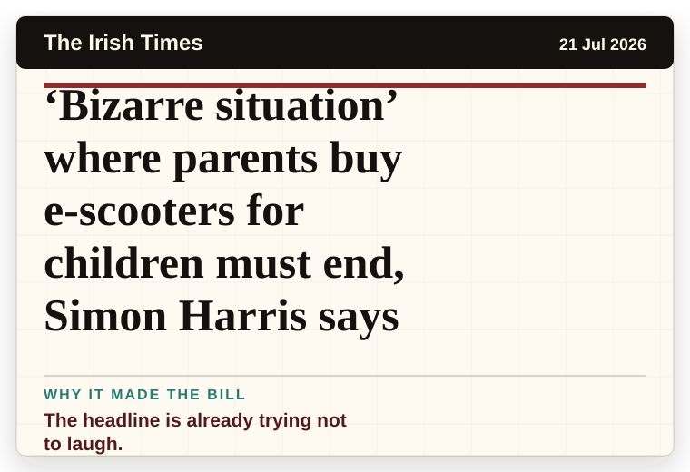
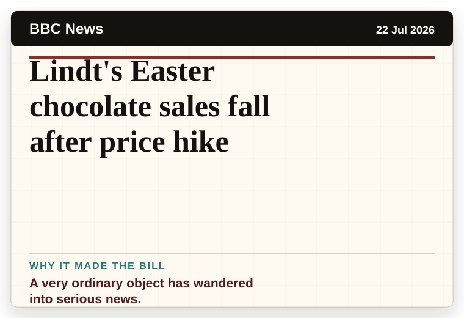
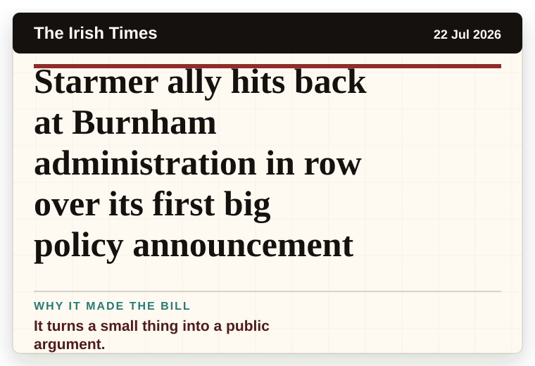
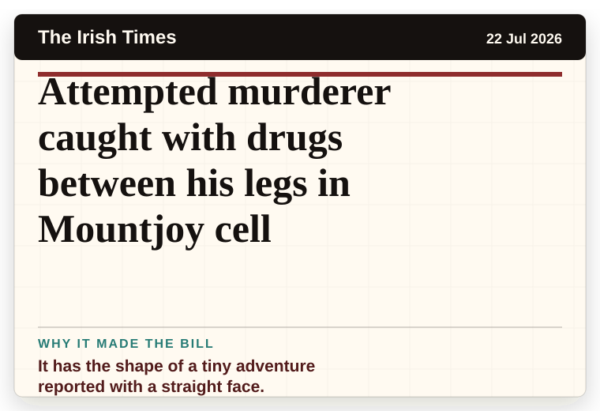
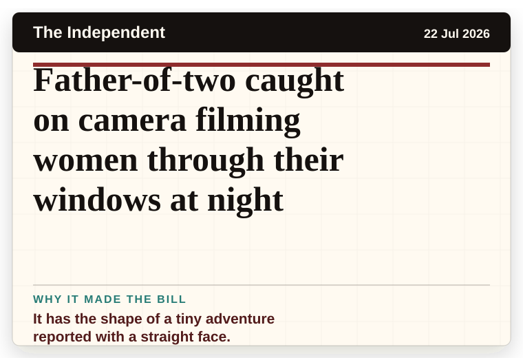
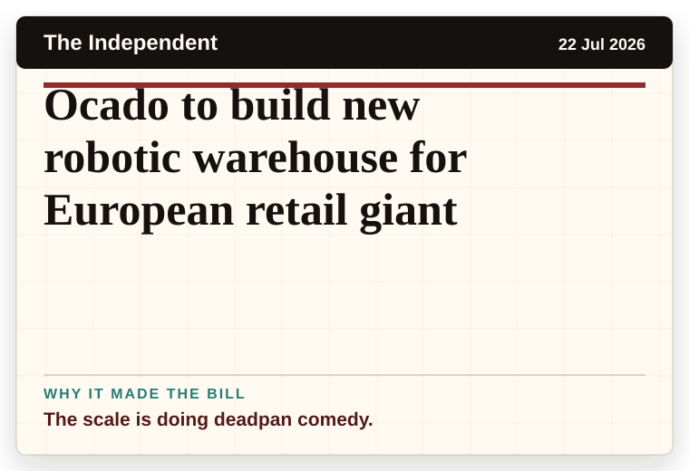
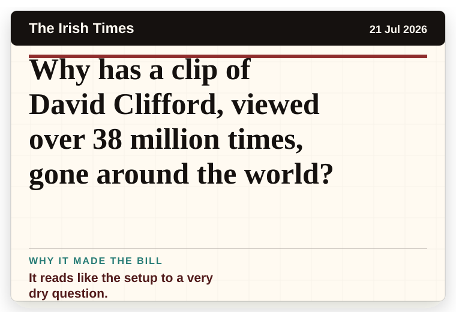
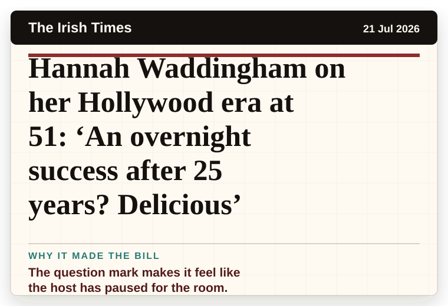

NT News
Australia
Charli XCX’s new album Music, Fashion, Film took her ‘by surprise’
It has the shape of a tiny adventure reported with a straight face.
The latest daily picks, linked back to the original sources. Search the room, pick a source, or follow a headline out to the full story.
Record updated: 22 Jul 2026, 07:53 AM AEST
Showing 18 headline candidates from the refresh run completed on 22 Jul 2026, 07:53 AM AEST.
It has the shape of a tiny adventure reported with a straight face.

The headline is already trying not to laugh.

The headline is already trying not to laugh.

A household object has somehow reached the news desk.

A household object has somehow reached the news desk.

A mystery is doing a lot of work in a very small sentence.

It has the shape of a tiny adventure reported with a straight face.

The second half quietly trips over the first half.

A wonderfully specific detail has taken centre stage.

The scale is doing deadpan comedy.

The headline is already trying not to laugh.

A very ordinary object has wandered into serious news.

It turns a small thing into a public argument.

It has the shape of a tiny adventure reported with a straight face.

It has the shape of a tiny adventure reported with a straight face.

The scale is doing deadpan comedy.

It reads like the setup to a very dry question.

The question mark makes it feel like the host has paused for the room.